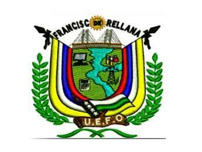

Docentes UEFO 2025
Autoridades
-
Guido Antonio Manchay Castillo – Rector:
Dirige y representa la institución educativa.
-
Kleber Mauricio Escobar Punina – Vicerrectorado:
Apoya la gestión académica y pedagógica.
-
Gabriela Nicela Fajardo Onofre – Vicerrectorado:
Apoya la planificación y seguimiento académico.
-
Saira Paulina Grefa Reasco – Secretaría:
Administra los registros y documentos institucionales.
-
Álvaro David Torres López – Inspección General:
Apoya la convivencia y organización institucional.
Docentes de la Jornada Vespertina
- Completar con los nombres de los docentes confirmados por la institución.